Linux入门
学习目标
- 理解Linux的文件系统
- 理解Linux的用户系统
- 掌握必备的linux命令使用
- 会使用一些高级命令
- 会配置ubuntu基本环境
学习内容
华为镜像源
[codeblock]虚拟机工具安装
[codeblock]Linux介绍
操作系统的作用
- 是现代计算机系统中 最基本和最重要 的系统软件
- 是 配置在计算机硬件上的第一层软件，是对硬件系统的首次扩展
- 主要作用是管理好硬件设备，并为用户和应用程序提供一个简单的接口，以便于使用
- 而其他的诸如编译程序、数据库管理系统，以及大量的应用软件，都直接依赖于操作系统的支持
不同领域的OS
桌面操作系统：
- Windows：用户群体大
- Mac：特定用户
- Linux：专业人士
服务器操作系统
- Linux：安全，稳定，免费，开源，占有率高
- Windows Server： 付费，占有率低
移动设备操作系统:
- Android: 开源，市占率最高
- IOS：闭源，市占率不到20%
- OpenHarmony：开源，发展中
一些常识
IP问题
127.0.0.1： 本机
localhost: 本机
192.168.23.175：外网
单用户与多用户操作系统
单用户操作系统：
- 单用户操作系统旨在为一台计算机的单个用户提供服务。这种操作系统只能同时处理一个用户的请求，并且仅能为该用户提供资源和执行任务。
- 单用户操作系统通常用于个人计算机和家庭用户。它们的设计目的是提供简单的界面和易于使用的功能，以满足单个用户的需求。
- 典型的单用户操作系统包括早期的Windows版本（如Windows 95、Windows 98）和Mac OS Classic。
- 在单用户操作系统中，所有的资源（如CPU、内存、硬盘空间）都专门为该用户服务。用户可以拥有对系统的完全控制，并且可以访问所有文件和设置。
多用户操作系统：
- 多用户操作系统允许多个用户同时访问和使用计算机系统的资源。它们能够管理和协调多个用户之间的任务，并确保每个用户获得适当的资源分配。
- 多用户操作系统通常在服务器和大型组织中使用，例如企业、学校和政府机构。这些系统能够同时处理来自多个用户的请求，并提供网络访问、文件共享和协作功能。
- 典型的多用户操作系统包括UNIX、Linux和Windows Server等。
- 多用户操作系统具有更复杂的资源分配和权限管理机制。系统管理员可以设置不同的用户账户，并根据用户的身份和需求对资源进行分配和限制。用户之间的访问权限和数据隔离也得到有效管理。
文件系统
Windows文件系统
在 Windows 下，打开 “计算机”，我们看到的是一个个的驱动器盘符：

每个驱动器都有自己的根目录结构，这样形成了多个树并列的情形，如图所示：
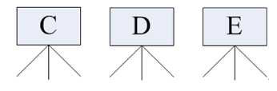
Linux文件系统
在 Linux 下，我们是看不到这些驱动器盘符，我们看到的是文件夹（目录）：

Ubuntu 没有盘符这个概念，只有一个根目录 /，所有文件都在它下面:

Linux主要目录
- /（根目录）：
- 根目录是整个Linux文件系统的起始点，所有其他目录和文件都位于根目录之下。
- 在根目录下，可以找到系统中的各个重要目录和文件。
- /bin：
- /bin目录存放系统中的基本用户命令（二进制文件）。
- 该目录包含许多常用的命令，例如ls、cp、rm等，这些命令可供所有用户使用。
- /sbin：
- /sbin目录存放系统管理员使用的命令（二进制文件）。
- 与/bin目录类似，/sbin目录中的命令提供了一些系统管理和配置相关的功能，如ifconfig、fdisk等。
- 普通用户通常无法直接访问/sbin目录下的命令。
- /usr：
- /usr目录是Unix软件资源的主要存放位置。
- /usr目录下包含了许多子目录，如/usr/bin、/usr/lib、/usr/include等，用于存放用户程序、库文件、头文件等。
- /usr目录通常是共享给多个用户使用的，其中/usr/local目录用于存放本地安装的软件。
- /etc：
- /etc目录包含系统的配置文件。
- 该目录中存放了许多重要的配置文件，如网络配置、用户账户配置、服务配置等。
- 系统管理员可以通过编辑这些配置文件来定制系统行为和设置。
- /home：
- /home目录是用户的主目录存放位置。
- 在/home目录下，每个用户都有一个对应的子目录，用于存放该用户的个人文件和配置。
- 用户可以在自己的主目录下创建和管理文件和子目录。
- /var：
- /var目录存放可变数据，即经常变化的文件。
- 这包括日志文件、数据库文件、邮件文件等。
- 一些服务和应用程序会将它们的数据存放在/var目录下。
- /tmp：
- /tmp目录用于存放临时文件。
- 系统和应用程序可以在需要时将临时文件存放在该目录下，但这些文件在系统重启后会被清除。
这些是Linux文件系统中的一些主要目录，每个目录都有其特定的功能和用途。它们的结构和用法可以根据不同的Linux发行版和系统配置略有不同。
需要掌握的命令
查看目录下文件信息
[codeblock]ls是英文单词list的简写，其功能为列出目录的内容，是用户最常用的命令之一，它类似于DOS下的dir命令。Linux文件或者目录名称最长可以有265个字符，“.”代表当前目录，“..”代表上一级目录，以“.”开头的文件为隐藏文件，需要用 -a 参数才能显示。
ls常用参数：
参数 | 含义 |
-a | 显示指定目录下所有子目录与文件，包括隐藏文件 |
-l | 以列表方式显示文件的详细信息 |
-h | 配合 -l 以人性化的方式显示文件大小 |
清屏
[codeblock]查看当前所在目录
[codeblock]使用pwd命令可以显示当前的工作目录，该命令很简单，但又很常用，直接输入pwd即可，后面不带参数。
切换工作目录
[codeblock]在使用Unix/Linux的时候，经常需要更换工作目录。cd命令可以帮助用户切换工作目录。Linux所有的目录和文件名大小写敏感
cd后面可跟绝对路径，也可以跟相对路径。如果省略目录，则默认切换到当前用户的主目录。
命令 | 含义 |
cd | 切换到当前用户的主目录(/home/用户目录)， 用户登陆时，默认的目录就是用户的主目录。 |
cd ~ | 切换到当前用户的主目录(/home/用户目录) |
cd . | 切换到当前目录 |
cd .. | 切换到上级目录 |
cd - | 可进入上次所在的目录 |
cd / | 切换到系统根目录/ |
如果路径是从根路径开始的，则路径的前面需要加上 “ / ”，如 “ /mnt ”，通常进入某个目录里的文件夹，前面不用加 “ / ”。
创建文件
[codeblock]用户可以通过touch来创建一个空的文件，在当前路径下创建名字为<file>的空文件。（<file>为自定义的文件名）。
Linux系统中没有严格的后缀（格式），所以创建文件时可以命名为任意的文件名。
创建目录
[codeblock]通过mkdir命令可以创建一个新的目录。
需要注意的是新建目录的名称不能与当前目录中已有的目录或文件同名，并且目录创建者必须对当前目录具有写权限。
可以通过 -p参数创建多级目录
删除文件
[codeblock]可通过rm删除文件或目录。使用rm命令要小心，因为文件删除后不能恢复。为了防止文件误删，可以在rm后使用-i参数以逐个确认要删除的文件。
常用参数及含义如下表所示：
参数 | 含义 |
-i | 以进行交互式方式执行 |
-f | 强制删除，忽略不存在的文件，无需提示 |
-r | 递归地删除目录下的内容，删除文件夹时必须加此参数 也可使用rmdir删除一个空目录 |
后面跟多个文件的名称
[codeblock]- *表示所有
- 删除目录a及a下所有文件和目录
拷贝操作
[codeblock]cp命令的功能是将给出的文件或目录复制到另一个文件或目录中.
常用选项说明：
选项 | 含义 |
-a | 该选项通常在复制目录时使用，它保留链接、文件属性，并递归地复制目录 简单而言，保持文件原有属性。 |
-f | 已经存在的目标文件而不提示 |
-i | 交互式复制，在覆盖目标文件之前将给出提示要求用户确认 |
-r | 若给出的源文件是目录文件，则cp将递归复制该目录下的所有子目录和文件 目标文件必须为一个目录名。 |
-v | 显示拷贝进度 |
移动操作
[codeblock]用户可以使用mv命令来移动文件或目录，也可以给文件或目录重命名.
常用选项说明：
选项 | 含义 |
-f | 禁止交互式操作，如有覆盖也不会给出提示 |
-i | 确认交互方式操作，如果mv操作将导致对已存在的目标文件的覆盖 系统会询问是否重写，要求用户回答以避免误覆盖文件 |
-v | 显示移动进度 |
查看文件内容
[codeblock]- 在命令行显示某个文件的内容。
- 将
<file1>的文件内容追加到<file>文件中。
- 将
<file1>和<file2>的内容合并到<file>中
echo输出
[codeblock][codeblock]一些高级命令
文件搜索
find命令功能非常强大，通常用来在特定的目录下搜索符合条件的文件，也可以用来搜索特定用户属主的文件。
常用用法：
[codeblock][codeblock][codeblock][codeblock][codeblock][codeblock][codeblock][codeblock][codeblock][codeblock][codeblock][codeblock]文本内容搜索
Linux系统中grep命令是一种强大的文本搜索工具，grep允许对文本文件进行模式查找。如果找到匹配模式， grep打印包含模式的所有行。
[codeblock]在grep命令中输入字符串参数时，最好用引号或双引号括起来。
[codeblock][codeblock][codeblock]常用选项说明：
选项 | 含义 |
-v | 显示不包含匹配文本的所有行（相当于求反） |
-n | 显示匹配行及行号 |
-i | 忽略大小写 |
-r | 包含子目录 |
压缩与解压
tar
常用参数：
参数 | 含义 |
-c | 生成档案文件，创建打包文件 |
-x | 解开档案文件 |
-z | 压缩/解压, 此选项只针对tar.gz为结尾的文件 |
-v | 列出归档解档的详细过程，显示进度 |
-t | 列出档案中包含的文件 |
-f | 指定档案文件名称，f后面一定是.tar文件，所以必须放选项最后 |
打包压缩文件：
[codeblock]xxx.tar.gz表示打包压缩后的文件名称*通配符，表示所有文件
解压缩文件：
[codeblock][codeblock]- 通过
-C(大C)，来指定解压目录 - 指定的目录需要先创建
zip和unzip
压缩文件：
[codeblock][codeblock]- 将当前目录所有文件压缩为
bak.zip - 只包含当前目录根目录，不包含子目录
- 将当前目录所有文件压缩为
bak.zip - 只包含当前目录根目录，含子目录
解压文件：
[codeblock]链接
Linux链接文件类似于Windows下的快捷方式。链接文件分为软链接和硬链接。
软链接
软链接不占用磁盘空间，源文件删除则软链接失效。常用，可以对文件或文件夹创建。
[codeblock]硬链接
硬链接只能链接普通文件，不能链接目录
[codeblock]没有-s选项代表建立一个硬链接文件，两个文件占用相同大小的硬盘空间，即使删除了源文件，链接文件还是存在，一般用于保护系统重要的文件。所以-s选项是更常见的形式。
如果软链接文件和源文件不在同一个目录，源文件要使用绝对路径，不能使用相对路径。
文件下载
wget命令可以进行文件下载
[codeblock][codeblock]关机和重启
[codeblock][codeblock][codeblock][codeblock][codeblock]用户和权限
文件和目录权限
通过命令ls -al可以查询到文件详细信息，如下图：
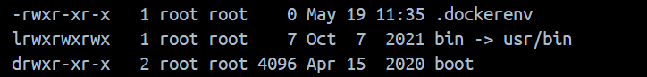
通过以上信息，我们可以了解具体文件的一些信息：
文件类型及权限 | 硬链接数量 | 文件属主 | 文件所属的组 | 文件大小 | 文件修改时间 | 文件名 |
| 1 | root | root | 0 |
|
|
| 1 | root | root | 7 |
|
|
| 2 | root | root | 4096 |
|
|
文件类型及权限总共是10位，第一位表示文件类型：
-表示文件l表示链接d表示文件夹
文件类型及权限的后9位，分为前三位，中三位，后三位：
- 前三位：表示当前文件的所有者的权限
- 中三位：表示当前文件的所有者所属组的权限
- 后三位：表示其他用户的权限
文件权限说明：
字母字母 | 数字表示 | 权限说明 |
r | 4 | 读取权限 |
w | 2 | 写入权限 |
x | 1 | 执行权限 |
- | 0 | 无权限 |
用户和组
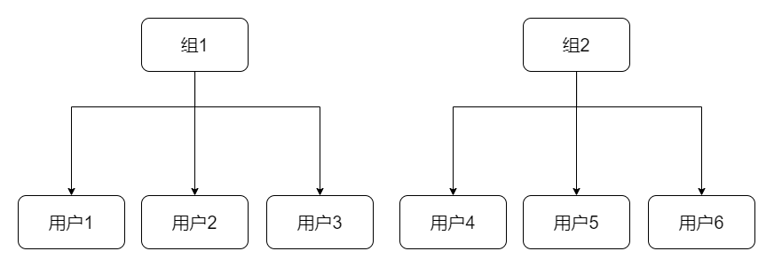
以上是linux的用户和组的关系
假设 当前用户是 用户1.
那么 组1中的 用户2和 用户3都属于所在用户组.
对于 用户4 用户5 用户6我们可以称之为其他用户.
通常我们的表示:
- 当前用户:
u - 所在用户组:
g - 其他用户:
o - 所有用户：
a
修改权限
chmod是一个用于修改文件或目录权限的命令，它在Unix和类Unix系统（包括Linux）中广泛使用。它可以控制文件的读、写和执行权限，以及文件的所有权和所属用户组。
chmod命令的基本语法如下：
- mode表示要设置的权限模式
- file(s)表示要修改权限的文件或目录。
mode可以使用以下形式来指定权限：
- 符号模式（Symbolic Mode）：使用
+、-和=来添加、删除或设置权限。例如，u+rwx表示给文件的所有者（user）添加读、写和执行权限。 - 数字模式（Numeric Mode）：使用三位八进制数来表示权限。每个数字代表一个权限组，分别是所有者、所属组和其他用户的权限。数字1表示执行权限，2表示写权限，4表示读权限。例如，chmod 755 file.txt将文件file.txt的权限设置为所有者具有读、写和执行权限，而所属组和其他用户只有读和执行权限。
账号管理
创建用户
[codeblock]修改用户
[codeblock]删除用户
[codeblock]-r表示把用户目录也删除
创建组
[codeblock]删除组
[codeblock]修改文件归属
[codeblock]切换用户
[codeblock][codeblock][codeblock]修改用户密码
[codeblock]输入命令后，会让输入原始密码，然后输入新密码，最后确认新密码。
查询当前用户
[codeblock]查看登录用户
[codeblock]SSH
全称Secure Shell，直译过来就是安全外壳协议。是一种用于在不安全的网络中进行安全远程登录和命令执行的加密网络协议。它提供了一种安全的通道，允许您安全地访问和管理远程系统。
SSH的主要目的是保护远程登录和数据传输过程中的机密性和完整性。通过使用公钥加密技术，SSH客户端和服务器之间建立起安全连接，所有传输的数据都经过加密，防止任何人窃听或篡改。SSH还提供身份验证机制，可以使用密码或公钥来验证用户身份。
SSH协议的功能和特点包括：
- 加密通信：SSH使用强大的加密算法，如AES、3DES等，保护数据在网络上的传输过程中的机密性。
- 身份验证：SSH支持多种身份验证方式，包括基于密码的身份验证和基于公钥的身份验证。公钥身份验证更安全，可以避免密码被窃取或猜测的风险。
- 端口转发：SSH可以通过端口转发功能，在本地和远程之间建立安全的通信通道，使得远程服务（如数据库、Web服务器）可以在本地进行访问。
- X11转发：SSH可以通过X11转发功能，在远程服务器上运行的图形应用程序的界面在本地显示，使得远程管理变得更加方便。
- 文件传输：SSH还提供了文件传输功能，可以安全地在本地和远程之间传输文件。
SSH广泛用于远程服务器管理、远程终端访问、文件传输、远程代码开发和安全隧道等场景。它是一个非常重要的网络安全工具，可以有效地保护敏感数据和系统的安全。
Mobaxterm安装
Mobaxterm是一个ssh客户端，方便和远程系统进行通讯。
- 来到官网下载。https://mobaxterm.mobatek.net/download-home-edition.html
- 任选一个即可：
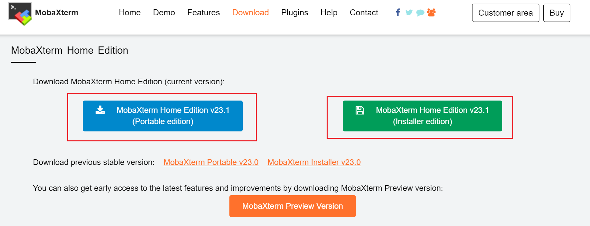
- 双击安装，下一步即可
Mobaxterm使用
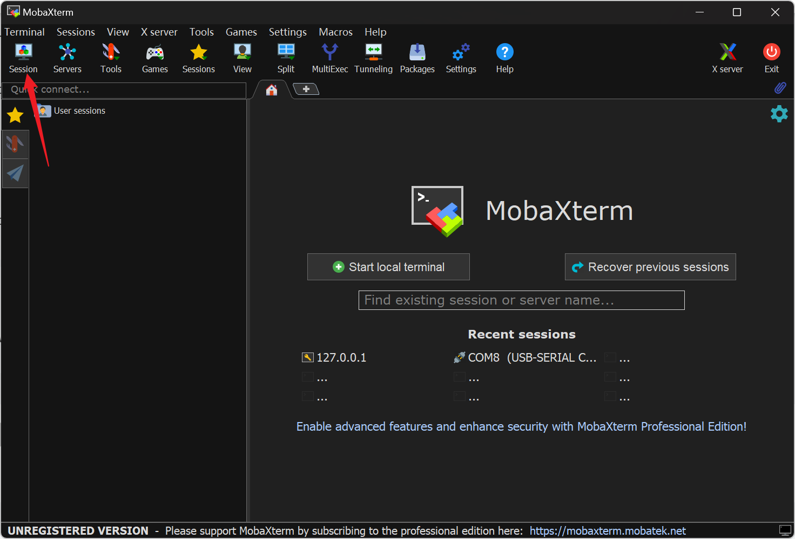
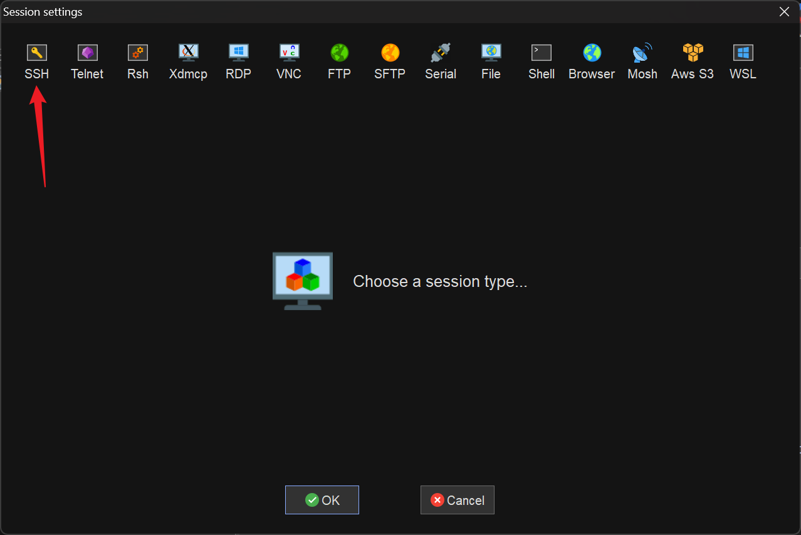
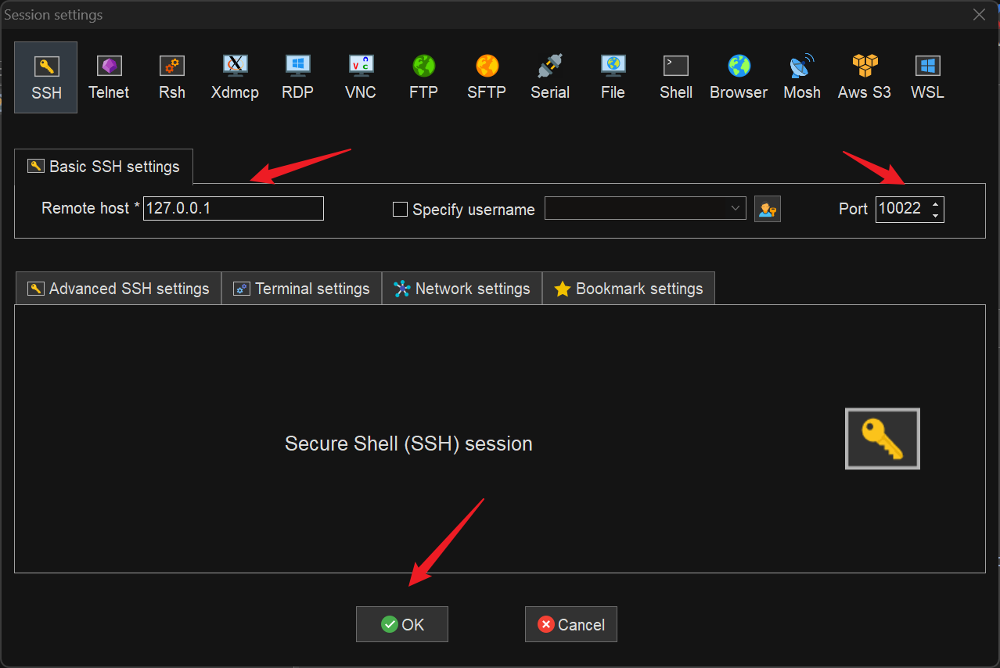
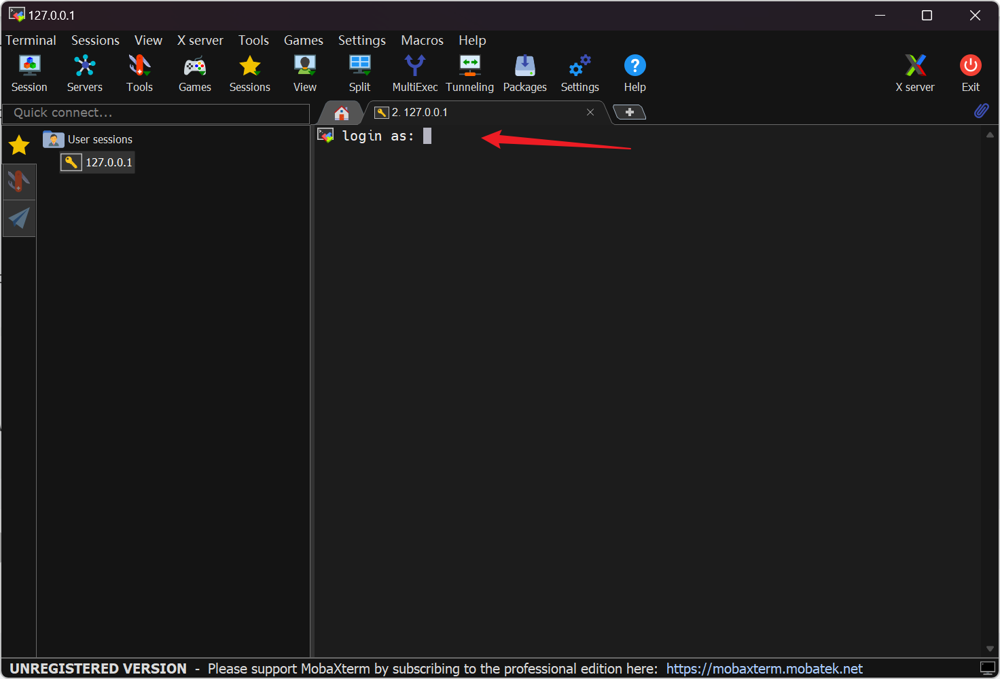
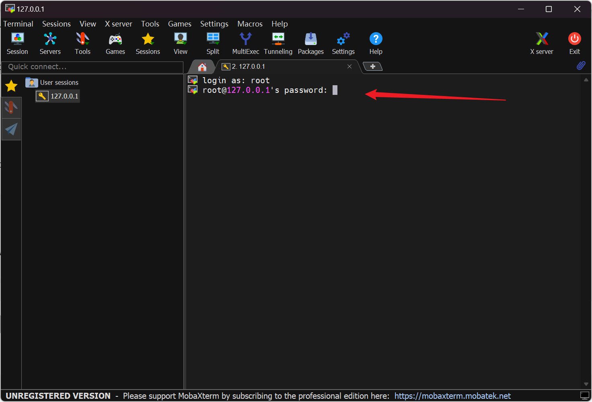
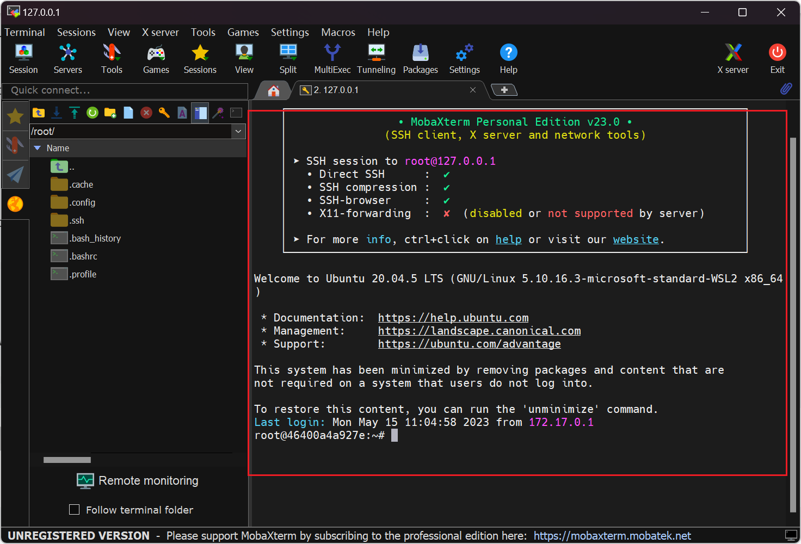
Ubuntu系统常规操作
修改镜像仓库
[codeblock]- 由于默认为国外镜像，网络不好，建议修改为国内镜像
修改完成后，需要更新，镜像仓库
[codeblock]通常更新完成后，需要更新一下系统的软件，让系统软件保持最新
[codeblock]安装SSH远程服务
[codeblock][codeblock][codeblock][codeblock]软件操作相关命令
[codeblock][codeblock][codeblock][codeblock][codeblock][codeblock][codeblock][codeblock][codeblock][codeblock][codeblock][codeblock][codeblock][codeblock][codeblock][codeblock]文件编辑
vim编辑器进行文件编辑。
如果没有vim命令，可以通过以下进行安装：
[codeblock]vim的三种模式：
- 编辑模式
- 末行模式
- 命令模式
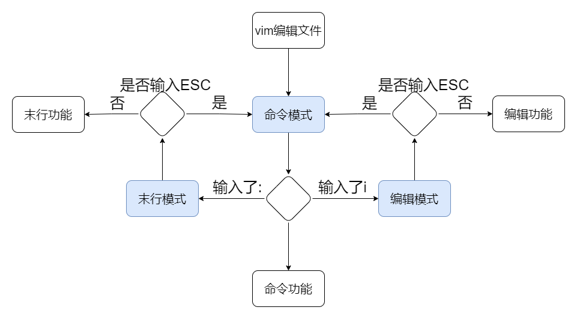
编辑模式
进入编辑模式
[codeblock]进入vim编辑器后，敲入i进入编辑模式，在编辑模式下，可以通过键盘进行输入
退出编辑模式
敲击ESC退出编辑模式，此时进入的是命令模式
末行模式
- w 保存
- q 退出
- q!强制退出
- x 保存并退出
- set nu 显示行号
- set nonu 隐藏行号
- 查找指定字符
- /anywords
- 按n定位下一个，shfit+n定位上一个
命令模式
- 复制粘贴
- yy 复制当前行
- p 粘贴
- 3yy 复制3行
- 2p 粘贴2遍
- 剪切
- dd
- 3dd剪切3行
- 撤销
- u 撤销
- Ctrl + r 反撤销
- 删除
- dd 删除当前行
- dG 删除当前行到文件末尾
- dH 删除当前行到文件开头
- 基本控制
- 上k下j左h右l
- 锚定符
- gg跳到当前文档首行
- G 跳到当前文档末行
- ^ 跳到当前行首
- $ 跳到当前行尾
练习题
- 完成文档内所有命令